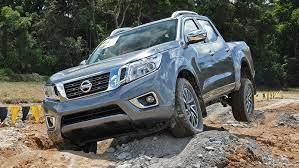

La Nissan NP300 Frontier es una camioneta tipo pick-up que combina robustez, tecnología y confort, diseñada tanto para el trabajo como para el uso personal 🚗💨
🚙💨CARACTERISTICAS:🚙💨
Motorización y rendimiento
- Gasolina: Motor QR25 2.5 L, 166 hp @ 6,000 rpm, 178 lb-pie @ 4,000 rpm.
- Diésel: Motor YD25 2.5 L, 188 hp @ 3,600 rpm, 332 lb-pie @ 2,000 rpm.
- Transmisión: Manual de 6 velocidades o automática de 7 velocidades.
- Tracción: 4x2 y 4x4 disponibles.
- Capacidad de carga: Hasta 1,057 kg en gasolina y 876 kg en diésel.
- Capacidad de remolque: Hasta 3,000 kg en versiones diésel
🚙💨Diseño y confort:🚙💨
Diseño
-
Exterior robusto: Líneas agresivas y aerodinámicas que le dan una apariencia fuerte y moderna.
-
Chasis reforzado: Construcción resistente para soportar terrenos difíciles.
-
Faros LED: Iluminación eficiente y de gran alcance.
-
Rines de aleación: Diseño atractivo y funcional para mejorar la estabilidad.
Confort
-
Asientos de piel: Mayor comodidad y estilo en el interior.
-
Aire acondicionado automático de doble zona: Mantiene una temperatura agradable para todos los pasajeros.
-
Sistema de anclaje ISO-FIX: Seguridad para sillas de bebé.
-
Pantalla LCD de 5”: Información clara y accesible para el conductor.
-
Sistema de audio con 6 bocinas: Sonido envolvente para una mejor experiencia de viaje.
-
Cámara y sensores de reversa: Facilitan el estacionamiento y maniobras en espacios reducidos.
|